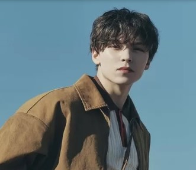

Seventeen (Hangul: 세븐틴; RR: Sebeuntin; digayakan dalam huruf kapital semua atau SVT) adalah sebuah boy grup
asal Korea Selatan yang dibentuk oleh Pledis Entertainment. Grup yang terdiri dari 13 anggota ini dibagi
berdasarkan spesialisasi keahlian masing-masing ke dalam 3 sub-unit; hip-hop unit, vocal unit, dan performance
unit. Kata "seventeen" yang berarti "tujuh belas" merupakan gabungan dari jumlah keseluruhan anggota mereka,
jumlah sub-unit, dan angka 1 yang berarti "kesatuan tim". Grup ini dikenal dengan sebutan Self-producing idol
karena keterlibatan anggotanya dalam penyusunan, pengembangan, dan pembuatan lagu serta koreografi. Grup
tersebut resmi debut dengan lagunya yang berjudul Adore U pada tahun 2015.
Anggota
Hip-Hop Unit
S.Coups
Nama Lahir
Choi Seung-cheol (최승철)
Tanggal Lahir
8 Agustus 1995
Posisi
Leader, Hip-Hop Team Leader, Rapper, Sub-Vocalist
Wonwoo
Nama Lahir
Jeon Won-woo (전원우)
Tanggal Lahir
17 July 1996
Posisi
Rapper, Sub-Vocalist
Mingyu
Nama Lahir
Kim Min-gyu (김민규)
Tanggal Lahir
6 April 1997
Posisi
Rapper, Sub-Vocalist, Visual, Face of the Group
Vernon

Nama Lahir
Hansol Vernon Chwe
Tanggal Lahir
18 Februari 1998
Posisi
Rapper, Sub-Vocalist, Visual, Face of the Group
Performance Unit
Hoshi
Nama Lahir
Kwon Soon-young (권순영)
Tanggal Lahir
15 Juni 1996
Posisi
Performance Team Leader, Main Dancer, Lead Vocalist, Sub-Rapper
Jun
Nama Lahir
JWen Jun-hui (文俊辉)
Tanggal Lahir
10 Juni 1996
Posisi
Lead Dancer, Sub-Vocalist
The8
Nama Lahir
Kim Min-gyu (김민규)
Tanggal Lahir
6 April 1997
Posisi
Rapper, Sub-Vocalist, Visual, Face of the Group
Dino
Nama Lahir
Lee Chan (이찬)
Tanggal Lahir
11 Februari 1999
Posisi
Main Dancer, Sub-Vocalist, Sub-Rapper, Maknae
Vocal Unit
Woozi
Nama Lahir
Lee Ji-hoon (이지훈)
Tanggal Lahir
22 November 1996
Posisi
Vocal Team Leader, Lead Vocalist, Producer
Jeonghan
Nama Lahir
Yoon Jeong-han (윤정한)
Tanggal Lahir
4 Oktober 1995
Posisi
Lead Vocalist, Visual
Joshua
Nama Lahir
Joshua Hong
Tanggal Lahir
30 Desember 1995
Posisi
Lead Vocalist, Visual
DK / Dokyeom
Nama Lahir
Lee Seok-min (이석민)
Tanggal Lahir
18 Februari 1997
Posisi
Main Vocalist
Seungkwan
Nama Lahir
Boo Seung-kwan (부승관)
Tanggal Lahir
16 Januari 1998
Posisi
Main Vocalist, Face of the Group
Album Terbaru
SPILL THE FEELS
Spill the Feels adalah sebuah album mini ke-12 dari Seventeen. Album tersebut dirilis
pada 14 Oktober 2024. Album mini tersebut berisikan enam lagu pilihan, yaitu "Eyes on you", "1 TO 13",
"Candy", "Rain", "Water", dan lagu utama "LOVE, MONEY, FAME (feat. DJ Khaled)".